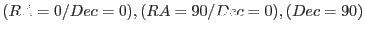
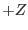
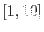

XMM-Newton Science Analysis System
tools (tools-1.67) [xmmsas_20170112_1337-16.0.0]
xmmtrack: XMM orbit TRACKing
- SYNOPSIS
xmmtrack
- DESCRIPTION
xmmtrack is an interactive IDL application that visualizes the orbit
and attitude data in an ODF in the form of a 3-D animation sequence.
The presented scenery includes an astronomically accurate simulation of the
Earth-Sun system plus the actual and predicted trajectory of the XMM
satellite on its path around the Earth. In more detail, the following
graphical elements are present:
- Earth:
The central body in the view frame which is illuminated
by the Sun on its day side. The Earth's surface shows the main geological
features (continents, oceans) and is rotating eastward at a constant
rate of 1 per day. The center defines the origin of a Cartesian reference
coordinate system whose three orthogonal axes are shown as red, green,
and blue lines. They define the directions:
 respectively.
- Actual trajectory:
A thin yellow three dimensional line outlines
the actual trajectory of the satellite that this ODF (pointed at via
the environment variable SAS_ODF) corresponds to. The end points
mark the beginning and the end of the observation.
- Predicted trajectory:
A thin red lines marks a complete orbit
around the Earth for a specified epoch (see below). Please note:
XMM's orbit is highly time variable and the predicted orbit will
significantly deviate from the actual trajectory if the reference epochs
differ. The predicted orbit is calculated on the bases of interpolated TLE
(two-line-element) data from NASA/GSFC's
Orbital Information Group.
- Satellite:
The satellite is shown as a solid model with a main cylindrical body and
rectangular solar panels in its actual attitude. A thin red line signifies
the viewing direction, the blue line is the  axis and the green line
completes the orthogonal right-handed triad. Please note: Under normal
circumstances one side of the solar panels is fully illuminated by the
Sun at all times. If there is no attitude data available the satellites
attitude will be set to RA=Dec=APOS=0 as a result of which
the solar panels can become unilluminated.
- GUI CONTROLS:
The user can interactively change the displayed scenery with a couple
of GUI elements:
- Drawing area:
The drawing area is sensitive to left-button mouse clicks. Moving the mouse
while holding the left button pressed allows to rotate the scenery arbitrarily
about all three axes.
- Animation button group:
Three buttons labeled Start, Stop, and Reset to
start, stop and reset the animation sequence.
- Satellite Scaling:
A slider to change the size of the satellite in the displayed frame between
100% and 900%
- Zoom view:
A slider to zoom into the view - range is  with 1 being the farthest
and 10 providing the closest view of the scenery.
- Animation step:
A slider to tune the animation step size - range: [100, 5000]s.
- Time slider:
The time slider at the bottom allows to advance the scenery to a specific
epoch. If the animation is running, push the Stop button, and move
the slider to the desired position. To resume the animation from this new
point onward simply push the Start button.
- Predicted orbit:
By default the predicted orbit is not shown in the scenery. Pushing the
button labeled Add will display a full predicted orbit for
the displayed reference epoch. The latter is changeable, i.e., the time
dependence of the orbit evolution can easily be studied. The predicted
orbit is shown with two white reference lines to guide the eye. The short
one signifies the position of the perigee. The longer one connects the
ascending and descending nodes of the orbit. Those are the points where
the orbital plane intersects the equator. Together with the orbit the
three main orbital elements are shown in the left panel:
- orbit inclination
- R.A. of the ascending node
- argument of the perigee
- USED SAS COMPONENTS
- oal: inquire orbit/attitude data
- caloalutils: compute predicted orbit
- utils: various STime routines
XMM-Newton SOC/SSC -- 2017-01-12